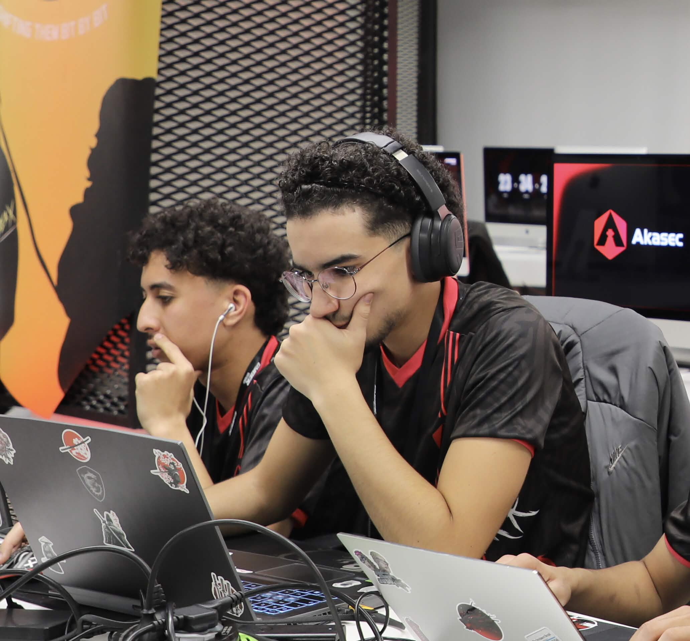

Full-stack engineer specializing in building scalable web platforms from the ground up. Currently finishing the 42 Common Core at 1337 (UM6P), where I shipped a production-grade SIEM tool as my capstone project.

I'm a software engineering student at 1337 Coding School (UM6P / 42 Network) in Casablanca, Morocco. Over two years of the 42 curriculum, I progressed from low-level C systems programming through C++ object-oriented design and into full-stack web development with modern frameworks.
My capstone project, ASSAS, is a complete SIEM platform I architected and built from scratch — real-time event ingestion, alert engine, incident management with Kanban workflows, threat intelligence feeds, and a custom C++ endpoint agent. The full stack runs on React, Nest.js, PostgreSQL, Redis, and Docker.
Outside of 1337, I've built and shipped several commercial web applications, including e-commerce platforms and digital marketplaces. I also compete in DFIR and CTF events with my team MIR4GE.
End-to-end web development, systems programming, and infrastructure.
A production-grade Security Information and Event Management platform. Built from scratch as the 42 capstone project (ft_transcendence). Covers the full SOC workflow — from raw event ingestion to alert triage, incident resolution, threat intelligence, and real-time team communication.
Admin-provisioned accounts, RBAC with granular permissions, team management, immutable audit logging, WAF middleware (XSS, SQLi, path traversal), and Redis-backed rate limiting.
Agent registration with pre-shared token auth, high-throughput event ingestion API, real-time WebSocket broadcast, heartbeat monitoring, and offline detection with automatic alerting.
5-stage alert lifecycle, correlation rules engine, alert-to-ticket conversion, 6-stage incident workflow with Kanban board, SLA tracking, and auto-created war rooms per incident.
IoC database with automated feed ingestion (MISP, OTX, STIX/TAXII) via BullMQ background jobs, enrichment lookups, real-time team chat and war rooms with typing indicators via Socket.io.
Widget-based dashboard system (9 widget types) with drag-and-drop layout, scheduled PDF/CSV reports, file management, and a custom C++ endpoint agent for metrics collection and log tailing.
Full writeups available on my blog.
Full-stack Moroccan e-commerce platform with WhatsApp-based ordering, admin panel, Jira-style task board, and volume discount engine. Built for non-tech-savvy customers.
Automated WhatsApp agent for Moroccan e-commerce. Handles incoming ad campaign messages and sends instant product details, images, and pricing to customers.
Digital goods marketplace with secure file delivery, payment integration, vendor dashboards, and automated order processing.
Full web application for a gaming community. User management, application system, staff dashboards, and real-time community features.
Two years of systems programming, algorithms, and software architecture at 1337 Coding School.
Open for full-stack engineering roles, freelance projects, or technical collaborations.